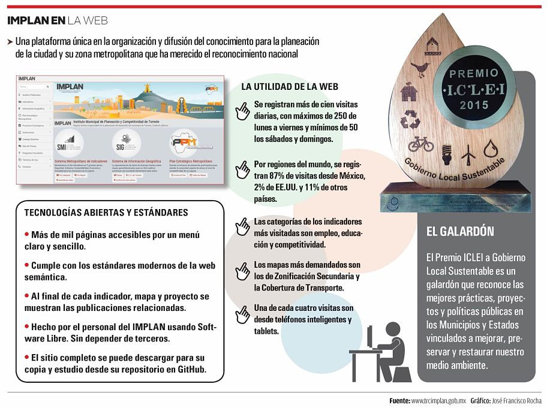

El Municipio de Torreón fue premiado como Gobierno Local Responsable en Planeación por la plataforma www.trcimplan.gob.mx.
Una herramienta que gracias al trabajo realizado por el equipo técnico del Instituto Municipal de Planeación y Competitividad (IMPLAN) ha logrado un importante vínculo informativo entre la ciudadanía y el municipio.
Durante el XIII Congreso Nacional de la organización internacional Gobiernos Locales por la Sustentabilidad (ICLEI), el municipio también fue reconocido con el programa "Torreón Iluminado al 100", como Gobierno Local Energéticamente Eficiente.
Además, obtuvo una mención honorífica como Gobierno Local Eficiente en la Gestión Integral de los Residuos Sólidos. Los galardones fueron recibidos por el primer regidor, Miguel Mery Ayup.
Con motivo de este reconocimiento, es pertinente dar a conocer cuál es la utilidad que tiene para la ciudadanía la página web del IMPLAN.
Pues se trata de una plataforma que es única en la organización y difusión del conocimiento para la planeación de la ciudad y su zona metropolitana.
La plataforma se integra por: el Sistema Metropolitano de Indicadores (SMI), El Sistema de Información Geográfica (SIG), estudios y análisis sobre problemáticas sociales, urbanas, económicas y ambientales, resultados de la planeación estratégica participativa.
Así como el Banco de Proyectos Estratégicos. Todo esto conforma un sistema articulado de información útil para la planeación urbana, el ordenamiento territorial y el diseño de políticas públicas enfocadas a la competitividad pero también al desarrollo sustentable.
Sus componentes
El Sistema Metropolitano de Indicadores (SMI), como primer componente es un banco de información sobre los temas de interés de nuestra ciudad y su zona metropolitana, para conocer el estado de distintos fenómenos comparables en el tiempo, pero también con otras ciudades y con estándares internacionales.
El SMI retoma metodologías probadas por instituciones expertas en diversos temas y mide lo mismo que toman en cuenta organizaciones nacionales e internacionales.
El SMI se organiza en 5 grandes temas como son Sustentabilidad, Gobierno, Sociedad, Seguridad y Economía, y 32 categorías como vivienda, recursos naturales, servicios públicos, movilidad, infraestructura, entre otros.
A pesar de tener su ámbito de acción en el municipio de Torreón, presenta información de los cuatro municipios metropolitanos y comparaciones estatales y nacionales.
En una misma interfaz muestra datos, gráficas, comparativos, mapas y artículos o proyectos relacionados.
Un Sistema de Información Geográfica (SIG) más que una importante herramienta tecnológica es una estructura de personas y equipos computacionales dedicados a la recopilación, procesamiento, almacenamiento y análisis de datos con información valiosa para una adecuada toma de decisiones.
La base de datos integrada al SIG, representa visualmente variables muy diversas (estadísticas, infraestructura, equipamiento, programas, proyectos) de distintas fuentes (imágenes de satélite, INEGI, CONEVAL, IMCO, IMPLAN y dependencias municipales), generando mapas de análisis, temáticos o informativos con datos de utilidad.
La principal característica de este sistema es que está diseñado para ser una herramienta que permita el acceso a la ciudadanía, como medio de consulta de información de la situación del municipio y de la zona metropolitana.
www.trcimplan.gob.mx ha venido fortaleciéndose desde su lanzamiento, en marzo de 2014, como una plataforma cada día más integral y completa, en la que interactúan sus diversos componentes.
Cuenta con 133 análisis (al momento de escribir esta publicación), artículos y estudios sobre las problemáticas de la ciudad y sus alternativas.
A su vez se integra un Banco de Proyectos que surgen de la planeación participativa y el Plan Estratégico-Metropolitano, en el cual alrededor de 250 expertos participan en el diagnóstico y proyección de visión, objetivos, estrategias, acciones y proyectos en seis mesas: Movilidad, Entorno Urbano, Sostenibilidad, Sociedad, Gobierno y Coordinación Metropolitana y Economía y Competitividad.
La plataforma ordena y recopila información dispersa para convertirla en conocimiento útil, para que el gobierno, empresas y sociedad conozcan las condiciones de nuestra ciudad.
Y así sepamos hacia donde orientar nuestras acciones, y con el tiempo podamos medir el impacto no sólo de las políticas públicas sino también de los proyectos empresariales y las iniciativas sociales que inciden en nuestro medio ambiente y territorio.
www.trcimplan.gob.mx, presenta el cambio de paradigma de una ciudad improvisada que se reinventaba cada periodo gubernamental, a una ciudad que ordena el conocimiento, proyectos y experiencias.
Dejando huella de los mismos, propiciando la continuidad y el desarrollo sustentable con una visión de largo plazo, a partir de la creación del Instituto de Planeación y Competitividad de Torreón.
Infografía
